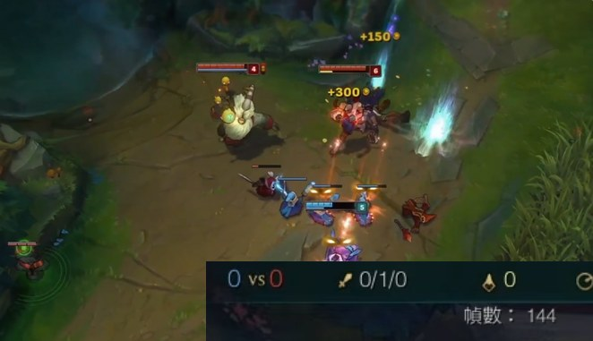

哪一種像你的電腦？
先對症狀。每一種都會先量、再說明，不會直接套一包設定。
團戰掉幀
平常很順，一打團戰就掉。
- 診斷會看
- 團戰時的處理器與顯示負載、背景程式、電源與溫度紀錄
- 你會拿到
- 同樣情境下，調校前後的平均 FPS 與 1% low 對比
畫質全調低，還是不順
特效都關到最低了，還是卡。
- 診斷會看
- 顯示輸出設定、顯卡設定、記憶體配置、系統資源占用
- 你會拿到
- 一張診斷單，寫清楚量到什麼、改了什麼、前後差多少
配備不差，偶爾頓一下
規格明明夠，就是會突然卡一下。
- 診斷會看
- 幀時間穩定度、儲存裝置狀態、驅動與背景活動
- 你會拿到
- 卡頓發生位置的紀錄，與處理過程的施工紀錄
舊筆電、只有內顯
沒有獨顯，連最低畫質都吃力。
- 診斷會看
- 內顯與記憶體設定、電源計畫、散熱與降頻狀況
- 你會拿到
- 這台電腦能到哪個程度的評估，包含升級值不值得，有就說，沒有就說沒有
更新之後變卡
Windows 或驅動更新完，突然不一樣了。
- 診斷會看
- 更新前後的設定差異、驅動版本、被改回預設的項目
- 你會拿到
- 變更清單、修復紀錄與還原方式
多工、開會時卡
同時開著通訊軟體、瀏覽器、直播，遊戲就掉。
- 診斷會看
- 同時執行程式的資源分配、背景服務、記憶體使用
- 你會拿到
- 多工情境下的前後對比，與日常使用建議
畫面跳，其實是網路
看起來像掉幀，可能是延遲在作怪。
- 診斷會看
- 網路抖動與封包遺失、網卡與連線設定
- 你會拿到
- 把「畫面卡」和「網路卡」分開的診斷結果。根源在路由器或線路，就直接告訴你，不亂調
都不像，或說不上來
只知道玩起來不舒服。
- 怎麼做
- 預約時描述遊戲與感覺就好。診斷會先把症狀量出來，再決定怎麼處理。
英雄聯盟實測案例
目前以英雄聯盟為主要案例，其他遊戲測完才會公布。
FPS，站長自己的內顯筆電，一般對戰
這是單一台電腦的個案，不代表每台都會這樣。每台的瓶頸不同，所以才要先診斷。
| 測試機型 | HP ProBook 430 G7（筆電） |
|---|---|
| 處理器 | Intel Core i5-10210U（4 核 8 緒，最高 4.2GHz） |
| 顯示 | Intel UHD Graphics（內建顯示，無獨立顯卡） |
| 記憶體 | 16 GB |
| 儲存 | 256 GB SSD |
| 解析度／更新率 | 1920×1080／60Hz |
| 供電與散熱 | 插電使用；系統預設散熱，沒有手動調高風扇轉速 |
| 調校前 | 日常使用狀態，沒有做任何優化，約 30 FPS |
| 一般對戰 | 約 30 → 100+ FPS |
| 混戰團戰 | 80+ FPS |

右圖是示意圖，不是這台測試機的實拍。FPS 指遊戲畫面實際算出的幀數，可以高於螢幕的 60Hz 更新率。
其他遊戲測試進度
| 英雄聯盟 | 已有實測案例 |
|---|---|
| 其他熱門遊戲 | 測試中 測完一款，公布一款，有前後數據才上架。 |
| 想優先支援的遊戲 | 預約時告訴我，會排進測試清單。 |
服務流程
約定好的時間，你在電腦前，全程看得到。
診斷
記錄硬體與系統狀態，量調校前的平均 FPS、1% low 與網路抖動。
備份
先建立還原點與備份，確認能還原，才開始動手。
調校
依服務等級逐項處理。進階項目先說明風險，你同意才執行。
驗證交付
同樣情境重測，交付前後對比與施工紀錄，確認常用功能正常，附上還原方式。
讓陌生人動你的電腦，這些事我不做
這行最大的門檻是信任，所以規則寫在前面。
- 調整前先備份，每一項都能還原
- 不修改、不注入遊戲檔案，不碰 Riot Vanguard
- Windows Defender 保持開啟
- 不更動 TPM 與 Secure Boot
- 遠端時你全程看得到畫面，只處理系統與驅動設定
- 進階項目先說明風險，勾選同意才執行
- 結束後移除遠端工具與連線權限
- 只收施工需要的硬體資訊與聯絡方式，結束後刪除
服務內容
試營運期間免費，正式價格會在試營運結束後公布。
服務受理範圍
為確保調校後有明顯成效，目前僅受理以下設備：
- 可升級 Windows 11 的機器
- 記憶體 8 GB 以上
不符合上述條件的機器，恕不受理。預約時先傳型號與記憶體容量，我會先幫你確認。
基礎
- 系統與遊戲的基本調校
- 顯卡驅動與設定檢查
- 電源與啟動項整理
- 網路穩定設定
試營運免費
進階
多數人選這個
- 包含基礎全部項目
- 進階效能調校
- 網路抖動優化
- 更新後的設定守護
試營運免費
完整
- 包含進階全部項目
- 系統元件精簡（限使用者自有的正版 Windows）
- 硬體升級建議
試營運免費
加購：大版本更新後的健檢，檢查設定有沒有被改回去，並重新量測。
保固與退費
7 天保固
調校後 7 天內，因設定失效或系統更新造成的問題，免費修復一次。
先約定成功標準，沒達到就退費
診斷時和你一起定好這次的成功標準，寫在診斷單上：同一場景、同一設定下，平均 FPS 或卡頓程度（1% low）要改善多少。調校後沒達到，依約退費。
誰在幫你調
- 有電腦硬體維修與壞硬碟檔案掃描的經驗。
- 方法來自我自己的經驗：把自己的內顯筆電從 30 FPS 測到 100 以上，才開始幫別人看。
- 一次只接少數客戶，每一步都診斷、都留紀錄。
- 資料處理：只收施工需要的硬體資訊與聯絡方式，不開你的個人檔案，服務結束後刪除。前後數據只在你同意時當範例。
常見問題
會保證提升多少 FPS 嗎？
不保證固定數字。每台電腦先測，再告訴你可以改善到哪裡。調了也沒有意義的，我會直接說。
會不會影響遊戲或被封號？
我只調整 Windows 與驅動的設定，不修改、不注入遊戲檔案，也不碰 Riot Vanguard。調整前先備份，每一項都能還原。
遠端是怎麼進行的？
約好時段，你坐在電腦前，全程看得到畫面。我只處理系統與驅動設定，結束後中斷連線，你的電腦上不會留下任何遠端軟體。使用的遠端工具：Windows 內建的「快速助手」，不用另外安裝。。
一定要換硬體嗎？
先調到這台電腦應有的水準，再評估升級值不值得。要換的話，會告訴你換哪一項最划算；不用換，就說不用換。
支援哪些電腦？
Windows 10 與 Windows 11，Intel、AMD、NVIDIA 顯示晶片，筆電與桌機都可以，但需符合服務受理範圍（可升級 Windows 11、記憶體 8 GB 以上）。預約時先傳型號，不適合的我會事先說明。
有其他遊戲也能調嗎？
目前以英雄聯盟為主要案例。其他遊戲正在測試，有前後數據才會公布，想優先的遊戲預約時告訴我。